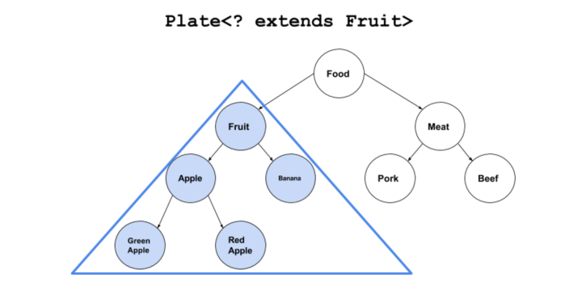
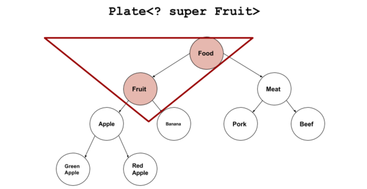

如果你写过前端，可能会经常写一下关于变量类型的判断，比如：typeof fn === 'function'之类的代码。因为JavaScript作为一门弱类型语言，类型的判断往往需要开发人员自己去检查。
Java作为一门强类型语言，它的强就强在类型的约束比较严格，大多都是在编译器（IDEA、eclipse...）里就做了检查，也就是说你刚敲完一个字符，如果有类型错误，下一秒就能提示你哪错了。这也避免了运行时的错误，让你的代码更加的严谨。下面就来了解一下为类型约束做出卓越贡献的人物——泛型。
Java泛型（generics）是JDK 1.5中引入的一个新特性，泛型提供了编译时类型安全检测机制，该机制允许程序员在编译时检测到非法的类型。泛型的本质是参数化类型，也就是说操作的数据类型被指定为一个参数。
我知道，上面那些干巴巴的概念对于初学者看了也是一头雾水。下面让我们穿越回到JDK 1.5之前的时代，当初还没有泛型的存在，我们是怎么生活的呢？
ArrayList可以看做“可变长度”的数组，用起来比数组方便。实际上，ArrayList内部就是一个Object[]数组，配合存储一个当前分配的长度，就可以充当“可变数组”：
public class ArrayList {
private Object[] array;
private int size;
public void add(Object e) {...}
public void remove(int index) {...}
public Object get(int index) {...}
}如果有上面的ArrayList存储String类型，会有这么几个缺点：
例如，代码必须这么写：
ArrayList list = new ArrayList();
list.add("Hello");
// 获取到Object，必须强制转型为String:
String first = (String) list.get(0);很容易出现ClassCastException，因为容易“误转型”：
list.add(new Integer(123));
// ERROR: ClassCastException:
String second = (String) list.get(1);要解决上面的问题，我们可以为String单独编写一种ArrayList：
public class StringArrayList {
private String[] array;
private int size;
public void add(String e) {...}
public void remove(int index) {...}
public String get(int index) {...} // 注意这个特意做了处理
}这样一来，存入的必须是String，取出的也一定是String，不需要强制转型，因为编译器会强制检查放入的类型：
StringArrayList list = new StringArrayList();
list.add("Hello");
String first = list.get(0);
// 编译错误: 不允许放入非String类型:
list.add(new Integer(123));好了，虽然没有用泛型，但是借助劳动人民的智慧结晶，我们也能把这个问题解决掉🤲 。
然而，新的问题又来了，如果要存储Integer，还需要为Integer单独编写一种ArrayList：
public class IntegerArrayList {
private Integer[] array;
private int size;
public void add(Integer e) {...}
public void remove(int index) {...}
public Integer get(int index) {...} // 此处单独处理
}实际上，还需要为其他所有class单独编写一种ArrayList：LongArrayList、DoubleArrayList、PersonArrayList...想到这些，肯定奔溃了。
好的，为了解决新的问题，我们必须把ArrayList变成一种模板：ArrayList<T>，代码如下：
public class ArrayList<T> {
private T[] array;
private int size;
public void add(T e) {...}
public void remove(int index) {...}
public T get(int index) {...} // 注意，T就是参数类型变量
}因此，泛型就是定义了一种模板，例如ArrayList，然后在代码中为用到的类创建对应的ArrayList<类型>：
ArrayList<String> strList = new ArrayList<String>(); // new 后面的String可以省略不写这样，即实现了编写一次，万能匹配，又通过编译器保证了类型安全：这就是泛型的作用。
泛型就是参数化类型，也就是说所操作的数据类型被指定为一个参数。
这是你第二遍看到这句话了，是不是有了新的认知，如果没有，请把上面泛型的由来再看一遍。
通俗点讲，泛型，看表面的意思，泛型就是指广泛的、普通的类型。在java中是指把类型明确的工作推迟到创建对象或调用方法的时候才去明确的特殊的类型。
解释一下上面的话：我们之前执行一个函数的时候，参数的类型提前定义好，参数的值在调用时传入。有了泛型之后，参数的类型也可以不用提前定义好，先给个变量（e.g.：T、E、V）把参数类型存起来，直到运行时再传入。总之一句话，把类型参数当做形参传进去用。来看一个简单的例子：
ArrayList<String> strings = new ArrayList<String>();
strings.add("a String");
String aString = strings.get(0);可以看到，通过菱形语法<>可以将ArrayList内的元素的类型限定为String类型。
注意：
<>内的类型只能是引用类型。当然，对于基本类型，可以使用对应的包装类型
Java泛型的使用有以下几种类型：
泛型类型用于类的定义中，被称为泛型类。类结构是面向对象中最基本的元素，如果我们的类需要有很好的扩展性，那么我们可以将其设置成泛型的。假设我们需要一个数据的包装类，通过传入不同类型的数据，可以存储相应类型的数据。
通过泛型可以完成对一组类的操作对外开放相同的接口。最典型的就是各种容器类，如：List、Set、Map。
下面来定义一个普通的泛型类：
// 此处T可以随便写为任意标识，常见的如T、E、K、V等形式的参数常用于表示泛型
// 在实例化泛型类时，必须指定T的具体类型
public class Generic<T>{
// key这个成员变量的类型为T,T的类型由外部指定
private T key;
public Generic(T key) { // 泛型构造方法形参key的类型也为T，T的类型由外部指定
this.key = key;
}
public T getKey(){ // 泛型方法getKey的返回值类型为T，T的类型由外部指定
return key;
}
}下面来调用这个泛型类：
// 泛型的类型参数只能是类类型（包括自定义类），不能是简单类型
// 传入的实参类型需与泛型的类型参数类型相同，即为Integer.
Generic<Integer> genericInteger = new Generic<Integer>(100);
//传入的实参类型需与泛型的类型参数类型相同，即为String.
Generic<String> genericString = new Generic<String>("key_string");
Log.d("泛型测试","key is " + genericInteger.getKey()); // 泛型测试: key is 100
Log.d("泛型测试","key is " + genericString.getKey()); // 泛型测试: key is key_string定义的泛型类，就一定要传入泛型类型实参么？
并不是这样，在使用泛型的时候如果传入泛型实参，则会根据传入的泛型实参做相应的限制，此时泛型才会起到本应起到的限制作用。如果不传入泛型类型实参的话，在泛型类中使用泛型的方法或成员变量定义的类型可以为任何的类型。
泛型接口与泛型类的定义及使用基本相同。泛型接口常被用在各种类的生产器中，可以看一个例子：
//定义一个泛型接口
public interface Generator<T> {
public T next();
}下面有两点需要注意：
/**
* 未传入泛型实参时，与泛型类的定义相同，在声明类的时候，需将泛型的声明也一起加到类中
* 即：class FruitGenerator<T> implements Generator<T>{}
*
* 如果不声明泛型，如：class FruitGenerator implements Generator<T>，编译器会报错："Unknown class"
*/
class FruitGenerator<T> implements Generator<T>{
@Override
public T next() {
return null;
}
}/**
* 传入泛型实参时：
* 定义一个生产器实现这个接口,虽然我们只创建了一个泛型接口 Generator<T>
* 但是我们可以为 T 传入无数个实参，形成无数种类型的 Generator 接口。
* 在实现类实现泛型接口时，如已将泛型类型传入实参类型，则所有使用泛型的地方都要替换成传入的实参类型
* 即：Generator<T>，public T next();中的的T都要替换成传入的 String 类型。
*/
public class FruitGenerator implements Generator<String> {
private String[] fruits = new String[]{"Apple", "Banana", "Pear"};
@Override
public String next() {
Random rand = new Random();
return fruits[rand.nextInt(3)];
}
}类型通配符一般是使用?代替具体的类型参数。例如List在逻辑上是List<String>,List<Integer>等所有List<具体类型实参>的父类 。Java泛型的通配符分3种：无界、上界和下界通配符。下面一一介绍：
无界通配符作为最基础的一种通配符， 它和下面要讲的泛型方法差不多，只是不用在使用前进行定义，例子如下：
import java.util.*;
public class GenericTest {
public static void main(String[] args) {
List<String> name = new ArrayList<String>();
List<Integer> age = new ArrayList<Integer>();
List<Number> number = new ArrayList<Number>();
name.add("icon");
age.add(18);
number.add(314);
getData(name);
getData(age);
getData(number);
}
// public <T> void getData(List<T> data) {} 这是个泛型方法
public void getData(List<?> data) {
System.out.println("data :" + data.get(0));
}
}输入结果为：
data :icon
data :18
data :314因为getData()方法的参数是List类型的，所以 name，age，number 都可以作为这个方法的实参，这就是通配符的作用。
?是类型实参，而不是类型形参
上界通配符使用<? extends T>来定义，可以看出是出现?和T存在继承关系的。我们先来看一个有继承关系的两个类：
class Fruit {}
class Apple extends Fruit {}现在我们定义一个盘子类：
class Plate<T>{
T item;
public Plate(T t){
item = t;
}
public void set(T t) {
item=t;
}
public T get() {
return item;
}
}上面我们定义了一个盘子类，下面，我们实例化一个水果盘子：
Plate<Fruit> p=new Plate<Apple>(new Apple());
// 编译报错：cannot convert from Plate<Apple> to Plate<Fruit>装苹果的盘子无法转化成装水果的盘子。我们知道了，就算容器中的类型存在继承关系，但是Plate和Plate两个容器直接是不存在继承关系的。在这种情况下， Java就设计成Plate<? extend Fruit>来让两个容器之间存在继承关系。我们上面的代码就可以进行赋值了 :
Plate<? extends Fruit> p = new Plate<Apple>(new Apple());Plate<? extends Fruit>覆盖下面的蓝色部分：

下界通配符的意思是容器中只能存放T及其T的基类类型的数据。我们还是以上面类层次的来看，<? super Fruit>覆盖下面的红色部分：

下界通配符<? super T>不影响往里面存储，但是读取出来的数据只能是Object类型。
泛型通配符< ? extends T >来接收返回的数据，此写法的泛型集合不能使用add方 法， 而< ? super T >不能使用get方法，作为接口调用赋值时易出错。
这个怎么来理解呢？当我们使用extends时，我们可以读元素，因为元素都是Fruit类或子类，可以放心的用Fruit类拿出。当使用super时，可以添加元素，因为都是Fruit类或父类，那么就可以安全的插入Fruit类。
上界
<? extends T>不能往里存，只能往外取，适合频繁往外面读取内容的场景。下界
<? super T>不影响往里存，但往外取只能放在Object对象里，适合经常往里面插入数据的场景。下界<? super T>不影响往里存，但往外取只能放在Object对象里，适合经常往里面插入数据的场景。
前面我们介绍的泛型是作用于整个类的，现在我们来介绍泛型方法。泛型方法既可以存在于泛型类中，也可以存在于普通的类中。如果使用泛型方法可以解决问题，那么应该尽量使用泛型方法。
我们见到的大多数泛型类中的成员方法也都使用了泛型，有的甚至泛型类中也包含着泛型方法，这样在初学者中非常容易将泛型方法理解错了。记住一点：泛型类，是在实例化类的时候指明泛型的具体类型；泛型方法，是在调用方法的时候指明泛型的具体类型 。
在泛型类中定义泛型方法：
class DataHolder<T>{
T item;
public void setData(T t) {
this.item=t;
}
public T getData() { // 这个不是泛型方法！
return this.item;
}
/**
* 泛型方法
* @param e
*/
public <E> void PrintInfo(E e) {
System.out.println(e);
}
}从上面的例子中，我们看到我们是在一个泛型类里面定义了一个泛型方法printInfo。通过传入不同的数据类型，我们都可以打印出来。在这个方法里面，我们定义了类型参数 E。这个 E 和泛型类里面的 T 两者之间是没有关系的。哪怕我们将泛型方法设置成这样：
// 注意这个T是一种全新的类型，可以与泛型类中声明的T不是同一种类型。
public <T> void PrinterInfo(T e) {
System.out.println(e);
}
// 调用方法
DataHolder<String> dataHolder=new DataHolder<>();
dataHolder.PrinterInfo(1);
dataHolder.PrinterInfo("AAAAA");
dataHolder.PrinterInfo(8.88f);运行结果如下：
1
AAAAA
8.88这个泛型方法依然可以传入Double、Float等类型的数据。泛型方法里面的类型参数T和泛型类里面的类型参数是不一样的类型，从上面的调用方式，我们也可以看出，泛型方法printInfo不受我们DataHolder中泛型类型参数是String的影响。
再看一个泛型方法和可变参数的例子：
public <T> void printMsg( T... args){
for(T t : args){
Log.d("泛型测试","t is " + t);
}
}调用：
printMsg("111",222,"aaaa","2323.4",55.55);静态方法有一种情况需要注意一下，那就是在类中的静态方法使用泛型：静态方法无法访问类上定义的泛型；如果静态方法操作的引用数据类型不确定的时候，必须要将泛型定义在方法上。
即：如果静态方法要使用泛型的话，必须将静态方法也定义成泛型方法 。
public class StaticGenerator<T> {
/**
* 如果在类中定义使用泛型的静态方法，需要添加额外的泛型声明（将这个方法定义成泛型方法）
* 即使静态方法要使用泛型类中已经声明过的泛型也不可以。
* 如：public static void show(T t){..},此时编译器会提示错误信息：
"StaticGenerator cannot be refrenced from static context"
*/
public static <T> void show(T t){
}
}泛型方法能使方法独立于类而产生变化，以下是一个基本的指导原则：
static的方法，无法访问类泛型定义的泛型参数。所以如果static方法要使用泛型能力，就必须使其成为泛型方法参考：